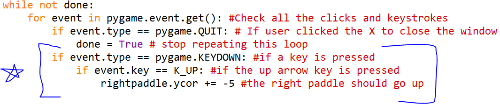

Pong
So far we have a working Pygame program with a Ball class. We're going to make a clone of the famous video game Pong. Let's save it as "pong.py."Square Ball
If you notice in the screenshot above, the ball in Pong is traditionally square. This is your first mission. Change your code so there's only one ball, still bouncing around, but it's a square.The Net
From the screenshot at the top of the page, you can see the "net" going down the middle of the screen is made of squares identical to the ball. Draw a line of squares down the middle of the screen. A loop would make this very easy!Paddle Time
Now we need to create the paddles. Since there will be more than one, and since we'll be reusing the code for future games, let's make a Paddle class.The paddle will be a rectangle, much higher than it is wide. It's x-coordinate will never change, but its y-coordinate is a variable. You'll need an "init" method and a "draw" method.
Here's a hint on the Paddle class code:
You need to create the paddles by providing all the properties the "init" method needs. Can you do it?class Paddle: def __init__(self,xcor,ycor,height,width,color): ...
This is the code for creating the left paddle. Put it right after creating the ball. You'll have to do the right paddle yourself.
Finally, inside the display loop, you need to move the paddles (we'll add more code for that soon).#create the paddles: leftpaddle = Paddle(50,#xcor randint(50,450),#ycor 50,#height 10,#width WHITE) #color
#move the paddles leftpaddle.draw() rightpaddle.draw()
Here's what the screen should look like so far:
Moving with Keys!
Finally, you're going to learn to move an object with keys! Remember how Pygame stores every "event" and we make it listen for the user clicking the X to close the display? We can listen for specific keystrokes, too. Add this to the imports:The code to listen for the up arrow, and if it's pressed, make the right paddle move "up" the screen is this:from pygame.locals import *

But if you run the program and press the up arrow, the paddle moves only once! You have to keep pressing the key to get it to move. Not fun! So we'll add a property to the paddle class called "move." We'll also change the "draw" method so it'll automatically add the "move" when there is one.
Now we can add all the keydowns and keyups to the code:
Now our paddles should move smoothly without having to keep clicking. Test it out!
Collisions
Collision detection is a very complicated programming exercise. We could add a ton of conditionals ("If the ball's left edge is at the same x-value as the paddle's right edge and the ball's yvalue is between....") or we could say a little silent "thank you" to whoever created Pygame's "Rect" function. If two objects are "Rects" they can automatically check for collisions! It's not quite the same as the "rect" we've been drawing. There are 3 steps we need to perform:1. Add a Rect to the Ball class
The "Rect" object needs to be declared and given a position and a size. Here's the code to put in the Ball class:Here's the great part. As the ball moves, it can just check if it's colliding with another "Rect" and change direction if it does. It'll only change its x-direction for now. In the ball's "move" method, add the code indicated below:
2. Add a Rect to the Paddle class
And here's the code to change in the Paddle class:3. Have the ball check if it's colliding with either paddle
Lastly, in the display loop, the ball needs to check if it's colliding with a paddle. It'll loop over the (very short) list like this:Run this and the ball should now bounce off the walls and the paddles!
Keeping Score
We don't want the ball to bounce off the left and right anymore. If it gets to the left edge (x=0) we want it to change its x-value to the middle of the screen. Same if it gets to the right edge. Can you make the adjustments to the code? Try it before continuing.Add this code right after the Paddle class:
We just defined the class, now the next two steps are creating the instance of the class, and displaying it.class Score: def __init__(self,xpos,ypos): self.xpos = xpos self.ypos = ypos self.score = 0 def increaseScore(self,value): self.score += value def displayScore(self): # This is a font we use to draw text on the screen (size 72) font = pygame.font.SysFont("911 Porscha", 72) text = font.render(str(self.score), True, WHITE) screen.blit(text, [self.xpos, self.ypos]) def resetScore(self): self.score = 0
Add this after creating the paddles. It declares the x- and y-coordinates of each score:
Finally, display the score in the display loop, after moving the paddles:leftscore = Score(250,25) rightscore = Score(400,25)
Run it and this is what your program should look like:#display the scores leftscore.displayScore() rightscore.displayScore()
Extension: Ending Game and Replay
You can let your players keep playing until they get tired and click the X to close, or you can set a maximum score. When one of the players gets to 5, for example, the program will stop the game and ask if the user wants a replay. Put this code in the display loop right before updating the screen:
Now run the program and see if everything is functional. Enjoy!#if one player scores 5 (or whatever max you choose) if leftscore.score == 5 or rightscore.score == 5: #start "waiting" for a response waiting = True while waiting: #display the Game Over text font = pygame.font.Font(None, 36) text = font.render("GAME OVER. PLAY AGAIN? Y/N ", True, WHITE) screen.blit(text, [200, 250]) for event in pygame.event.get(): #check keystrokes if event.type == pygame.KEYDOWN: #if a key is pressed if event.key == K_y: #if player presses Y for "yes" leftscore.resetScore() #reset the scores rightscore.resetScore() waiting = False break if event.key == K_n: #if player presses N for "no" waiting = False done = True #game is done break pygame.display.update() #keep refreshing screen while waiting
(Stuck? Check out the full source)
Now let's step up the difficulty with another classic game, Breakout
Problems or Bugs? Let Us Know. Sorry, this page isn't mobile-optimized!